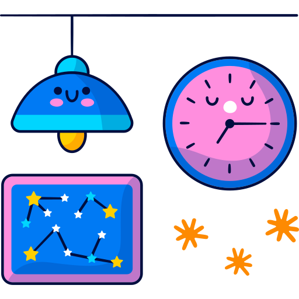
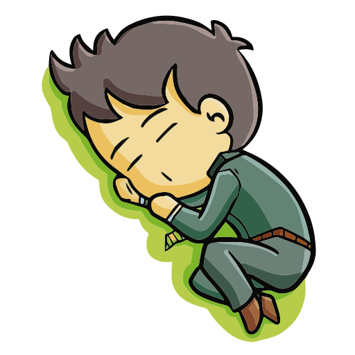
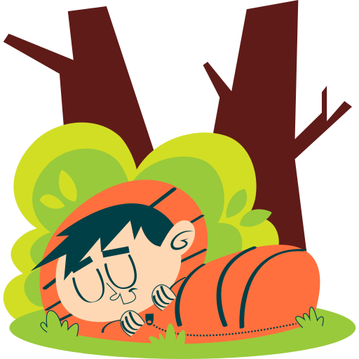

Importância de Dormir Bem
É durante o sono que o organismo exerce as principais funções restauradoras do corpo, como o reparo dos tecidos, o crescimento muscular e a síntese de proteínas. Durante este momento, é possível repor energias e regular o metabolismo, fatores essenciais para manter corpo e mente saudáveis. Dormir bem é, então, hábito que deve ser incluído na rotina de todos.
Especialistas recomendam em média 8 horas de sono por dia, sem interrupções. Este número pode variar de acordo com a idade de cada indivíduo e as necessidades de desenvolvimento de seu corpo, de acordo com o indicado.
FASES DO SONO
A quantidade de tempo em que se dorme pode favorecer o ciclo de sono completo do organismo, de acordo com as fases listadas abaixo.
Na primeira fase, a pessoa está adormecendo - em uma zona entre estar acordado e estar dormindo. Neste momento o cérebro está trabalhando de maneira irregular, o corpo relaxa e a respiração fica mais lenta.
O sono leve se inicia na segunda fase, quando a temperatura do corpo e os batimentos cardíacos diminuem.
Na terceira fase, as ondas cerebrais diminuem seu ritmo e a pessoa entra em sono profundo.
A quarta fase ocorre durante este momento desacordado e é quando organismo libera hormônios de crescimento, tecidos se recuperam e o corpo repõe a energia gasta.
É na quinta fase que a pessoa começa a sonhar. O cérebro acelera novamente seu funcionamento e realiza uma espécie de faxina na memória, mantendo as informações importantes que foram recebidas no dia.
Riscos de não dormir direito:

- Afeta a imunidade.
- Facilita o desenvolvimento da obesidade
- Aumenta o risco de doenças cardíacas
- Compromete a coordenação motora.
- Amplia as chances de ter diabetes.
- Propicia a depressão
- As olheiras começam a aparecer
- Sim, sua libido pode diminuir ao dormir mal

Conselhos para dormir rápido
- Controlar a respiração
- Relaxar os músculos
- Distrair a mente
- Ouvir música relaxante
- Concentrar-se em algo
- Tentar manter os olhos abertos
- Adequar o ambiente
- Tomar uma bebida quente
Como dormir bem?
Aqui estão as respostas para sua pergunta:
- Respeitar o horário de ir dormir
- Desligar a TV e outros aparelhos
- Ler antes de dormir
- Criar um ambiente escuro
- Cochilar depois do almoço
- Praticar exercício regularmente
- Evitar tomar café 6h antes de dormir
- Tomar um chá antes de dormir